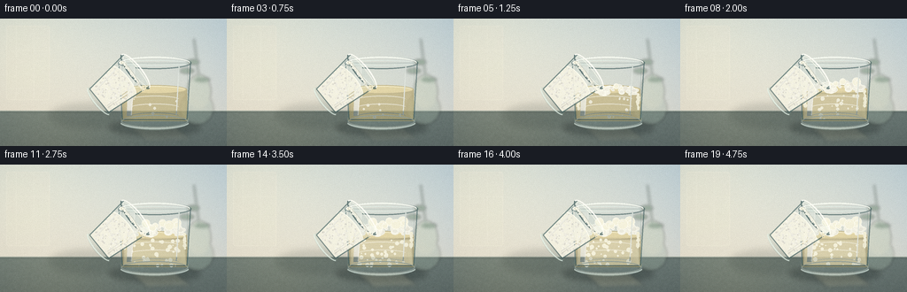
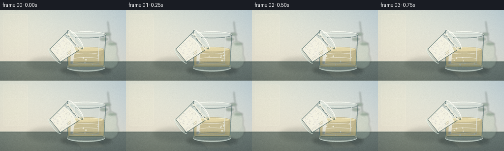
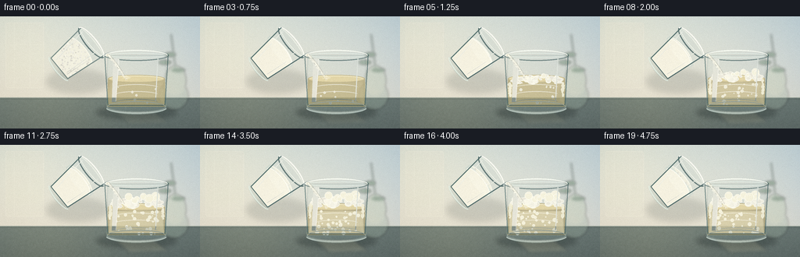
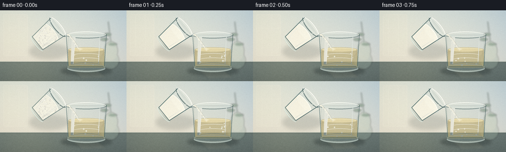

CODING AGENTS AS PIXEL WORLD MODELS
traex/DeepSeek-V4.1-Flash · material_0024
点击播放 · 原生 RGB 像素
逐轮保存的候选
回放视频、检查图与代码变化。
每份候选均可单独播放。实际图片检查记录在下方工具轨迹中。
候选 01播放与检查图
点击播放 · 原生 RGB 像素


展开代码变化
--- 上一保存版本
+++ 本次保存版本
@@ -0,0 +1,384 @@
+from pathlib import Path
+
+import numpy as np
+from PIL import Image, ImageDraw, ImageFilter
+
+import artifact_io
+
+
+W, H, N, FPS = 256, 144, 20, 4.0
+S = 4 # Supersampling makes the glass rims, powder, and foam clean at 256x144.
+WS, HS = W * S, H * S
+ROOT = Path(__file__).resolve().parent
+
+
+def sc(value):
+ return int(round(value * S))
+
+
+def rgba(color, alpha=255):
+ return tuple(color) + (int(alpha),)
+
+
+def noise_field(h, w, rng, scale=1.0):
+ small = rng.normal(0.0, 1.0, (max(2, h // max(1, int(scale))), max(2, w // max(1, int(scale)))))
+ image = Image.fromarray(np.uint8(np.clip(128 + small * 26, 0, 255)), "L")
+ return np.asarray(image.resize((w, h), Image.Resampling.BICUBIC), dtype=np.float32) / 255.0
+
+
+def make_background(rng):
+ yy, xx = np.mgrid[0:HS, 0:WS].astype(np.float32)
+ x = xx / (WS - 1)
+ y = yy / (HS - 1)
+
+ # Soft blue-gray studio wall.
+ top = np.array([207, 219, 218], dtype=np.float32)
+ bottom = np.array([229, 224, 209], dtype=np.float32)
+ blend = np.clip(y / 0.80, 0.0, 1.0)[..., None]
+ wall = top * (1.0 - blend) + bottom * blend
+
+ # Warm window glow entering from upper left.
+ glow = np.exp(-(((x - 0.05) / 0.42) ** 2 + ((y - 0.02) / 0.58) ** 2))
+ wall += glow[..., None] * np.array([20, 13, 2], dtype=np.float32)
+
+ # Cooler falloff toward the right edge.
+ edge = np.clip((x - 0.55) / 0.45, 0.0, 1.0) ** 2
+ wall -= edge[..., None] * np.array([12, 5, -4], dtype=np.float32)
+
+ grain = noise_field(HS, WS, rng, 2.4)
+ wall += (grain[..., None] - 0.5) * 4.0
+ image = Image.fromarray(np.uint8(np.clip(wall, 0, 255)), "RGB")
+
+ draw = ImageDraw.Draw(image, "RGBA")
+
+ # A restrained window reflection gives the glass edges something to catch.
+ draw.rounded_rectangle(
+ (sc(7), sc(8), sc(56), sc(92)),
+ radius=sc(3),
+ fill=rgba((244, 239, 216), 40),
+ outline=rgba((255, 252, 235), 38),
+ width=sc(1),
+ )
+ draw.line((sc(18), sc(10), sc(18), sc(90)), fill=rgba((255, 253, 240), 32), width=sc(1))
+ draw.line((sc(38), sc(10), sc(38), sc(90)), fill=rgba((255, 253, 240), 25), width=sc(1))
+ draw.line((sc(8), sc(36), sc(55), sc(36)), fill=rgba((255, 253, 240), 25), width=sc(1))
+
+ # Countertop: honed blue-gray stone with a warm reflected highlight.
+ counter_top = sc(104)
+ counter = np.array([106, 121, 119], dtype=np.float32)
+ stone = np.linspace(0.0, 1.0, HS - counter_top, dtype=np.float32)[:, None, None]
+ stone_rgb = counter[None, None, :] * (1.0 - stone * 0.19) + np.array([48, 57, 58])[None, None, :] * stone * 0.19
+ stone_rgb = np.broadcast_to(stone_rgb, (HS - counter_top, WS, 3)).copy()
+ mottling = noise_field(HS - counter_top, WS, rng, 8.0)
+ stone_rgb += (mottling[..., None] - 0.5) * 13.0
+ stone_rgb += np.exp(-(((xx[: HS - counter_top] / WS - 0.23) / 0.34) ** 2))[..., None] * np.array([18, 14, 6])
+ counter_img = Image.fromarray(np.uint8(np.clip(stone_rgb, 0, 255)), "RGB")
+ image.paste(counter_img, (0, counter_top))
+ draw = ImageDraw.Draw(image, "RGBA")
+ draw.line((0, counter_top, WS, counter_top), fill=rgba((218, 222, 207), 120), width=sc(1))
+ draw.line((0, counter_top + sc(2), WS, counter_top + sc(2)), fill=rgba((43, 54, 53), 38), width=sc(1))
+
+ # Very soft depth-of-field background forms.
+ bg = Image.new("RGBA", (WS, HS), (0, 0, 0, 0))
+ bgd = ImageDraw.Draw(bg, "RGBA")
+ bgd.ellipse((sc(203), sc(83), sc(241), sc(120)), fill=rgba((161, 181, 166), 78))
+ bgd.ellipse((sc(211), sc(63), sc(238), sc(102)), fill=rgba((190, 204, 182), 90))
+ bgd.line((sc(225), sc(70), sc(219), sc(23)), fill=rgba((93, 120, 103), 90), width=sc(2))
+ for cx, cy, rx, ry in [(211, 59, 8, 3), (228, 69, 9, 3), (218, 49, 7, 3)]:
+ bgd.ellipse((sc(cx - rx), sc(cy - ry), sc(cx + rx), sc(cy + ry)), fill=rgba((93, 124, 99), 115))
+ bg = bg.filter(ImageFilter.GaussianBlur(sc(1.6)))
+ image = Image.alpha_composite(image.convert("RGBA"), bg).convert("RGB")
+ return image
+
+
+def draw_glass(rng, frame_index):
+ """Draw the large reaction glass, liquid, bubbles, and foam."""
+ layer = Image.new("RGBA", (WS, HS), (0, 0, 0, 0))
+ draw = ImageDraw.Draw(layer, "RGBA")
+
+ left, right = 133, 216
+ top, bottom = 43, 124
+ inner_l, inner_r = left + 5, right - 5
+
+ # Ground shadow, slightly diffused.
+ shadow = Image.new("RGBA", (WS, HS), (0, 0, 0, 0))
+ sd = ImageDraw.Draw(shadow, "RGBA")
+ sd.ellipse((sc(123), sc(115), sc(226), sc(132)), fill=rgba((31, 42, 42), 86))
+ sd.ellipse((sc(137), sc(117), sc(211), sc(128)), fill=rgba((24, 34, 34), 78))
+ shadow = shadow.filter(ImageFilter.GaussianBlur(sc(3.0)))
+ layer = Image.alpha_composite(layer, shadow)
+ draw = ImageDraw.Draw(layer, "RGBA")
+
+ # Back wall of the tumbler.
+ body = [(inner_l, top + 7), (inner_r, top + 7), (right - 3, bottom - 8), (left + 3, bottom - 8)]
+ draw.polygon([(sc(x), sc(y)) for x, y in body], fill=rgba((178, 203, 201), 29))
+ draw.ellipse((sc(left + 3), sc(bottom - 16), sc(right - 3), sc(bottom + 2)), fill=rgba((132, 163, 161), 43))
+
+ # Vinegar: amber liquid with a bright meniscus and gentle internal streaks.
+ liquid_top = 80
+ liquid_mask = Image.new("L", (WS, HS), 0)
+ ld = ImageDraw.Draw(liquid_mask)
+ ld.polygon(
+ [
+ (sc(inner_l), sc(liquid_top)),
+ (sc(inner_r), sc(liquid_top)),
+ (sc(right - 4), sc(bottom - 8)),
+ (sc(left + 4), sc(bottom - 8)),
+ ],
+ fill=255,
+ )
+ ld.ellipse((sc(inner_l), sc(liquid_top - 5), sc(inner_r), sc(liquid_top + 5)), fill=255)
+
+ liquid = Image.new("RGBA", (WS, HS), (0, 0, 0, 0))
+ liquid_np = np.zeros((HS, WS, 4), dtype=np.uint8)
+ yy = np.linspace(0, 1, HS, dtype=np.float32)[:, None]
+ amber = np.zeros((HS, WS, 4), dtype=np.float32)
+ amber[..., 0] = 196 - 22 * yy
+ amber[..., 1] = 172 - 10 * yy
+ amber[..., 2] = 103 + 8 * yy
+ amber[..., 3] = 158
+ liquid_np[:] = np.uint8(np.clip(amber, 0, 255))
+ liquid = Image.fromarray(liquid_np, "RGBA")
+ layer.alpha_composite(Image.composite(liquid, Image.new("RGBA", (WS, HS), (0, 0, 0, 0)), liquid_mask))
+ draw = ImageDraw.Draw(layer, "RGBA")
+ draw.ellipse((sc(inner_l + 1), sc(liquid_top - 4), sc(inner_r - 1), sc(liquid_top + 4)), fill=rgba((229, 208, 139), 145))
+ draw.arc((sc(inner_l + 2), sc(liquid_top - 4), sc(inner_r - 2), sc(liquid_top + 5)), 188, 350, fill=rgba((255, 244, 198), 178), width=sc(1))
+ for y, alpha in [(87, 35), (96, 24), (106, 18)]:
+ draw.arc((sc(inner_l + 9), sc(y), sc(inner_r - 8), sc(y + 9)), 195, 342, fill=rgba((255, 240, 178), alpha), width=sc(1))
+
+ # Reaction progress: the liquid turns cloudy, bubbles rise, and foam grows.
+ t = frame_index / (N - 1)
+ reaction = np.clip((frame_index - 4) / 8.0, 0.0, 1.0)
+ cloud = Image.new("RGBA", (WS, HS), (0, 0, 0, 0))
+ cd = ImageDraw.Draw(cloud, "RGBA")
+ cd.polygon(
+ [(sc(inner_l + 2), sc(liquid_top + 4)), (sc(inner_r - 2), sc(liquid_top + 4)),
+ (sc(right - 5), sc(bottom - 9)), (sc(left + 5), sc(bottom - 9))],
+ fill=rgba((244, 238, 211), int(15 + 92 * reaction)),
+ )
+ cloud = cloud.filter(ImageFilter.GaussianBlur(sc(1.0)))
+ cloud.putalpha(Image.composite(cloud.getchannel("A"), Image.new("L", (WS, HS), 0), liquid_mask))
+ layer.alpha_composite(cloud)
+ draw = ImageDraw.Draw(layer, "RGBA")
+
+ # Rising bubbles. Their paths are deterministic and accelerate with the reaction.
+ bubble_rng = np.random.default_rng(734 + frame_index)
+ count = int(7 + reaction * 34)
+ for i in range(count):
+ phase = (bubble_rng.random() + t * (0.25 + 0.42 * reaction) + i * 0.173) % 1.0
+ bx = inner_l + 8 + (inner_r - inner_l - 16) * bubble_rng.random()
+ by = bottom - 10 - phase * (bottom - liquid_top - 15)
+ r = 0.55 + 1.9 * bubble_rng.random() * (0.7 + 0.3 * reaction)
+ alpha = int(75 + 105 * reaction)
+ draw.ellipse((sc(bx - r), sc(by - r), sc(bx + r), sc(by + r)), fill=rgba((252, 249, 224), alpha), outline=rgba((255, 255, 244), min(255, alpha + 40)), width=sc(0.35))
+
+ # Foam blanket and overflowing collar.
+ if frame_index >= 5:
+ foam_level = liquid_top + 4 - 9.5 * reaction
+ foam_rng = np.random.default_rng(2200)
+ for i in range(82):
+ fx = inner_l + 4 + (inner_r - inner_l - 8) * foam_rng.random()
+ envelope = np.sin(np.pi * (fx - inner_l) / (inner_r - inner_l))
+ fy = foam_level + (foam_rng.random() - 0.5) * (8.0 + 3.0 * reaction) - 2.2 * envelope
+ fr = 1.0 + foam_rng.random() * (2.7 + 1.7 * reaction)
+ tone = 235 + int(foam_rng.random() * 19)
+ draw.ellipse(
+ (sc(fx - fr), sc(fy - fr * 0.72), sc(fx + fr), sc(fy + fr * 0.72)),
+ fill=rgba((tone, tone - 2, tone - 15), 218),
+ outline=rgba((255, 255, 244), 220),
+ width=sc(0.42),
+ )
+ # A few larger, glossy reaction bubbles sit above the foam.
+ for i in range(int(2 + reaction * 10)):
+ fx = inner_l + 11 + (inner_r - inner_l - 22) * foam_rng.random()
+ fy = foam_level - 4 - foam_rng.random() * (2 + reaction * 5)
+ fr = 1.7 + foam_rng.random() * (2.0 + 2.4 * reaction)
+ draw.ellipse((sc(fx - fr), sc(fy - fr), sc(fx + fr), sc(fy + fr)), fill=rgba((250, 247, 225), 214), outline=rgba((255, 255, 244), 245), width=sc(0.55))
+ draw.arc((sc(fx - fr * 0.62), sc(fy - fr * 0.65), sc(fx + fr * 0.35), sc(fy + fr * 0.12)), 192, 330, fill=rgba((255, 255, 255), 220), width=sc(0.45))
+
+ # Foam clinging to the inner wall.
+ for side, x0, direction in [("l", inner_l + 1, 1), ("r", inner_r - 1, -1)]:
+ for j in range(11):
+ fy = foam_level + 3 + j * 1.6
+ fx = x0 + direction * (1.0 + 1.3 * foam_rng.random())
+ rr = 0.8 + 1.5 * foam_rng.random()
+ draw.ellipse((sc(fx - rr), sc(fy - rr), sc(fx + rr), sc(fy + rr)), fill=rgba((249, 245, 220), 205))
+
+ # Front glass shell: thin, cool edges with strong studio highlights.
+ draw.polygon(
+ [(sc(inner_l), sc(top + 7)), (sc(inner_r), sc(top + 7)), (sc(right - 3), sc(bottom - 8)), (sc(left + 3), sc(bottom - 8))],
+ outline=rgba((91, 126, 127), 155),
+ )
+ draw.line((sc(left + 1), sc(top + 8), sc(left + 5), sc(bottom - 10)), fill=rgba((68, 102, 104), 155), width=sc(1.2))
+ draw.line((sc(right - 1), sc(top + 8), sc(right - 5), sc(bottom - 10)), fill=rgba((55, 87, 90), 150), width=sc(1.2))
+ draw.line((sc(left + 5), sc(bottom - 10), sc(right - 5), sc(bottom - 10)), fill=rgba((55, 82, 83), 160), width=sc(1.1))
+ draw.arc((sc(left + 2), sc(bottom - 15), sc(right - 2), sc(bottom + 1)), 12, 168, fill=rgba((221, 237, 230), 165), width=sc(2.0))
+ draw.ellipse((sc(left + 4), sc(bottom - 15), sc(right - 4), sc(bottom - 1)), outline=rgba((223, 235, 224), 86), width=sc(1.0))
+
+ # Rim: double elliptical line, bright upper arc, dark lower arc.
+ draw.ellipse((sc(left), sc(top), sc(right), sc(top + 14)), outline=rgba((52, 83, 86), 160), width=sc(1.35))
+ draw.ellipse((sc(left + 4), sc(top + 4), sc(right - 4), sc(top + 10)), outline=rgba((231, 246, 239), 176), width=sc(0.8))
+ draw.arc((sc(left + 1), sc(top), sc(right - 1), sc(top + 14)), 178, 352, fill=rgba((251, 255, 247), 235), width=sc(1.5))
+
+ # Broad and narrow vertical reflections.
+ draw.polygon(
+ [(sc(left + 12), sc(top + 11)), (sc(left + 19), sc(top + 11)), (sc(left + 15), sc(bottom - 14)), (sc(left + 10), sc(bottom - 14))],
+ fill=rgba((248, 255, 250), 40),
+ )
+ draw.line((sc(left + 19), sc(top + 12), sc(left + 15), sc(bottom - 15)), fill=rgba((255, 255, 250), 120), width=sc(0.9))
+ draw.line((sc(right - 14), sc(top + 11), sc(right - 17), sc(bottom - 15)), fill=rgba((236, 249, 245), 72), width=sc(1.3))
+
+ # Subtle vertical caustic on the counter.
+ caustic = Image.new("RGBA", (WS, HS), (0, 0, 0, 0))
+ kd = ImageDraw.Draw(caustic, "RGBA")
+ kd.polygon(
+ [(sc(146), sc(122)), (sc(198), sc(122)), (sc(216), sc(137)), (sc(166), sc(139))],
+ fill=rgba((235, 224, 180), 20 + int(20 * reaction)),
+ )
+ caustic = caustic.filter(ImageFilter.GaussianBlur(sc(2.2)))
+ layer = Image.alpha_composite(layer, caustic)
+ return layer
+
+
+def make_soda_glass(rng):
+ """Build an upright soda glass in a local layer; the caller tilts it."""
+ lw, lh = 64, 76
+ local = Image.new("RGBA", (lw * S, lh * S), (0, 0, 0, 0))
+ d = ImageDraw.Draw(local, "RGBA")
+
+ # Back body and transparent walls.
+ body = [(sc(9), sc(11)), (sc(55), sc(11)), (sc(49), sc(67)), (sc(15), sc(67))]
+ d.polygon([(x, y) for x, y in body], fill=rgba((188, 212, 207), 34))
+ d.ellipse((sc(13), sc(59), sc(51), sc(73)), fill=rgba((137, 165, 161), 40))
+
+ # Baking soda: a bright granular bed inside the lower half.
+ powder_mask = Image.new("L", local.size, 0)
+ pm = ImageDraw.Draw(powder_mask)
+ pm.polygon([(sc(11), sc(31)), (sc(53), sc(31)), (sc(49), sc(65)), (sc(15), sc(65))], fill=255)
+ pm.ellipse((sc(10), sc(24), sc(54), sc(39)), fill=255)
+ powder = Image.new("RGBA", local.size, (0, 0, 0, 0))
+ pd = ImageDraw.Draw(powder, "RGBA")
+ pd.rectangle((0, 0, local.width, local.height), fill=rgba((244, 242, 227), 236))
+ for i in range(190):
+ px = sc(12 + rng.random() * 40)
+ py = sc(27 + rng.random() * 37)
+ rr = sc(0.35 + rng.random() * 0.75)
+ shade = int(214 + rng.random() * 39)
+ pd.ellipse((px - rr, py - rr, px + rr, py + rr), fill=rgba((shade, shade - 2, shade - 11), 230))
+ local.alpha_composite(Image.composite(powder, Image.new("RGBA", local.size, (0, 0, 0, 0)), powder_mask))
+ d = ImageDraw.Draw(local, "RGBA")
+ d.arc((sc(10), sc(24), sc(54), sc(38)), 186, 350, fill=rgba((255, 255, 243), 230), width=sc(1.1))
+ d.line((sc(17), sc(32), sc(21), sc(62)), fill=rgba((255, 255, 247), 55), width=sc(1.1))
+ d.line((sc(47), sc(32), sc(44), sc(63)), fill=rgba((255, 255, 247), 40), width=sc(1.0))
+
+ # Glass outline, mouth, and base.
+ d.line((sc(9), sc(11), sc(15), sc(66)), fill=rgba((72, 103, 103), 170), width=sc(1.2))
+ d.line((sc(55), sc(11), sc(49), sc(66)), fill=rgba((67, 97, 99), 170), width=sc(1.2))
+ d.line((sc(15), sc(66), sc(49), sc(66)), fill=rgba((66, 94, 96), 170), width=sc(1.1))
+ d.ellipse((sc(7), sc(6), sc(57), sc(21)), outline=rgba((53, 83, 85), 185), width=sc(1.4))
+ d.ellipse((sc(10), sc(9), sc(54), sc(17)), outline=rgba((247, 253, 242), 210), width=sc(0.85))
+ d.arc((sc(7), sc(6), sc(57), sc(21)), 176, 354, fill=rgba((255, 255, 247), 245), width=sc(1.5))
+ d.arc((sc(12), sc(61), sc(52), sc(72)), 10, 170, fill=rgba((227, 241, 232), 190), width=sc(1.5))
+ d.line((sc(14), sc(13), sc(20), sc(63)), fill=rgba((255, 255, 251), 110), width=sc(1.0))
+ d.line((sc(45), sc(13), sc(42), sc(62)), fill=rgba((245, 252, 244), 65), width=sc(1.1))
+ return local
+
+
+def draw_pour(rng, soda_glass):
+ """Place the tilted soda glass and draw the powder stream."""
+ layer = Image.new("RGBA", (WS, HS), (0, 0, 0, 0))
+ draw = ImageDraw.Draw(layer, "RGBA")
+
+ # Soft cast shadow for the suspended glass.
+ shadow = Image.new("RGBA", (WS, HS), (0, 0, 0, 0))
+ sd = ImageDraw.Draw(shadow, "RGBA")
+ sd.ellipse((sc(56), sc(96), sc(145), sc(123)), fill=rgba((37, 49, 48), 42))
+ shadow = shadow.filter(ImageFilter.GaussianBlur(sc(4.0)))
+ layer = Image.alpha_composite(layer, shadow)
+
+ rotated = soda_glass.rotate(-51, resample=Image.Resampling.BICUBIC, expand=True)
+ # The rotated local mouth is at the upper-right. This is the gentle pour angle.
+ px, py = sc(84), sc(26)
+ layer.alpha_composite(rotated, (px, py))
+ draw = ImageDraw.Draw(layer, "RGBA")
+
+ # Spout lip and a small bead of soda at the pour point.
+ spout = (sc(137), sc(49))
+ draw.ellipse((spout[0] - sc(2.0), spout[1] - sc(1.2), spout[0] + sc(2.4), spout[1] + sc(2.0)), fill=rgba((251, 249, 231), 242))
+ draw.arc((spout[0] - sc(2.3), spout[1] - sc(1.6), spout[0] + sc(2.8), spout[1] + sc(2.4)), 200, 340, fill=rgba((255, 255, 245), 240), width=sc(0.45))
+
+ # The falling stream curves slightly and lands near the mouth of the large glass.
+ stream = Image.new("RGBA", (WS, HS), (0, 0, 0, 0))
+ st = ImageDraw.Draw(stream, "RGBA")
+ steps = 72
+ for i in range(steps):
+ u = i / (steps - 1)
+ sx = 138.5 + 23.5 * u + 1.2 * np.sin(u * np.pi * 1.25)
+ sy = 49.5 + 31.0 * u
+ rr = 0.75 + 0.7 * (1.0 - u)
+ st.ellipse((sc(sx - rr), sc(sy - rr), sc(sx + rr), sc(sy + rr)), fill=rgba((248, 246, 226), 192))
+ st.line([(sc(138.5 + 23.5 * (i / 48) + 1.2 * np.sin((i / 48) * np.pi * 1.25)), sc(49.5 + 31.0 * (i / 48))) for i in range(49)], fill=rgba((255, 254, 239), 154), width=sc(0.8))
+ stream = stream.filter(ImageFilter.GaussianBlur(sc(0.20)))
+ layer.alpha_composite(stream)
+ draw = ImageDraw.Draw(layer, "RGBA")
+
+ # Discrete grains make the pour feel physical, not like a painted ribbon.
+ grain_rng = np.random.default_rng(4501)
+ for i in range(52):
+ u = (grain_rng.random() + i * 0.127) % 1.0
+ sx = 139 + 23 * u + grain_rng.normal(0, 0.65)
+ sy = 50 + 31 * u + grain_rng.normal(0, 0.45)
+ rr = 0.35 + grain_rng.random() * 0.55
+ st = int(230 + grain_rng.random() * 25)
+ draw.ellipse((sc(sx - rr), sc(sy - rr), sc(sx + rr), sc(sy + rr)), fill=rgba((st, st - 1, st - 13), 230))
+
+ # Small airborne dust catches the light around the falling column.
+ for i in range(16):
+ u = grain_rng.random()
+ sx = 139 + 23 * u + grain_rng.normal(0, 2.0)
+ sy = 50 + 31 * u + grain_rng.normal(0, 1.4)
+ rr = 0.22 + grain_rng.random() * 0.35
+ draw.ellipse((sc(sx - rr), sc(sy - rr), sc(sx + rr), sc(sy + rr)), fill=rgba((255, 252, 228), 95))
+
+ # Contact puff just above the liquid surface.
+ for i in range(11):
+ ang = grain_rng.random() * np.pi * 2
+ rad = grain_rng.random() * 6.0
+ sx = 162 + np.cos(ang) * rad
+ sy = 79 + np.sin(ang) * rad * 0.5
+ rr = 0.4 + grain_rng.random() * 0.7
+ draw.ellipse((sc(sx - rr), sc(sy - rr), sc(sx + rr), sc(sy + rr)), fill=rgba((255, 252, 232), 130))
+ return layer
+
+
+def render_frame(index, rng, background, soda_glass):
+ frame = background.copy().convert("RGBA")
+ frame = Image.alpha_composite(frame, draw_glass(rng, index))
+ frame = Image.alpha_composite(frame, draw_pour(rng, soda_glass))
+
+ # Gentle final grade and fine film grain at display resolution.
+ rgb = np.asarray(frame.convert("RGB").resize((W, H), Image.Resampling.LANCZOS), dtype=np.float32)
+ yy, xx = np.mgrid[0:H, 0:W].astype(np.float32)
+ vignette = 1.0 - 0.065 * (((xx / (W - 1) - 0.5) ** 2 + (yy / (H - 1) - 0.5) ** 2) / 0.5)
+ rgb *= vignette[..., None]
+ rgb += np.array([2.0, 1.0, -0.5], dtype=np.float32)
+ grain = np.random.default_rng(9000 + index).normal(0.0, 1.5, (H, W, 1))
+ rgb = np.clip(rgb + grain, 0, 255)
+ return np.uint8(rgb)
+
+
+def main():
+ rng = np.random.default_rng(20261111)
+ background = make_background(rng)
+ soda_glass = make_soda_glass(np.random.default_rng(8821))
+ frames = [render_frame(i, np.random.default_rng(300 + i), background, soda_glass) for i in range(N)]
+ artifact_io.save(frames, ROOT)
+
+ # A compact animated preview is useful when the delta player is opened locally.
+ images = [Image.fromarray(frame) for frame in frames]
+ images[0].save(ROOT / "preview.gif", save_all=True, append_images=images[1:], duration=int(1000 / FPS), loop=0)
+ print(f"saved {len(frames)} frames at {W}x{H}, {FPS} fps")
+
+
+if __name__ == "__main__":
+ main()
候选 02播放与检查图
点击播放 · 原生 RGB 像素

展开代码变化
--- 上一保存版本
+++ 本次保存版本
@@ -284,7 +284,7 @@
return local
-def draw_pour(rng, soda_glass):
+def draw_pour(rng, soda_glass, frame_index):
"""Place the tilted soda glass and draw the powder stream."""
layer = Image.new("RGBA", (WS, HS), (0, 0, 0, 0))
draw = ImageDraw.Draw(layer, "RGBA")
@@ -292,13 +292,15 @@
# Soft cast shadow for the suspended glass.
shadow = Image.new("RGBA", (WS, HS), (0, 0, 0, 0))
sd = ImageDraw.Draw(shadow, "RGBA")
- sd.ellipse((sc(56), sc(96), sc(145), sc(123)), fill=rgba((37, 49, 48), 42))
+ sd.ellipse((sc(59), sc(68), sc(139), sc(99)), fill=rgba((37, 49, 48), 38))
shadow = shadow.filter(ImageFilter.GaussianBlur(sc(4.0)))
layer = Image.alpha_composite(layer, shadow)
rotated = soda_glass.rotate(-51, resample=Image.Resampling.BICUBIC, expand=True)
# The rotated local mouth is at the upper-right. This is the gentle pour angle.
- px, py = sc(84), sc(26)
+ # The rotated mouth's lower lip is at local (89.4, 48.7), so this placement
+ # anchors it exactly at the start of the falling stream.
+ px, py = sc(48), 0
layer.alpha_composite(rotated, (px, py))
draw = ImageDraw.Draw(layer, "RGBA")
@@ -325,7 +327,7 @@
# Discrete grains make the pour feel physical, not like a painted ribbon.
grain_rng = np.random.default_rng(4501)
for i in range(52):
- u = (grain_rng.random() + i * 0.127) % 1.0
+ u = (grain_rng.random() + i * 0.127 + frame_index * 0.11) % 1.0
sx = 139 + 23 * u + grain_rng.normal(0, 0.65)
sy = 50 + 31 * u + grain_rng.normal(0, 0.45)
rr = 0.35 + grain_rng.random() * 0.55
@@ -354,7 +356,7 @@
def render_frame(index, rng, background, soda_glass):
frame = background.copy().convert("RGBA")
frame = Image.alpha_composite(frame, draw_glass(rng, index))
- frame = Image.alpha_composite(frame, draw_pour(rng, soda_glass))
+ frame = Image.alpha_composite(frame, draw_pour(rng, soda_glass, index))
# Gentle final grade and fine film grain at display resolution.
rgb = np.asarray(frame.convert("RGB").resize((W, H), Image.Resampling.LANCZOS), dtype=np.float32)
候选 03播放与检查图
候选 04播放与检查图
点击播放 · 原生 RGB 像素


展开代码变化
--- 上一保存版本
+++ 本次保存版本
@@ -284,6 +284,38 @@
return local
+def make_soda_glass_variant(rng, level_drop):
+ """Upright soda glass with a lower powder bed for later pour frames."""
+ glass = make_soda_glass(rng)
+ if level_drop <= 0:
+ return glass
+ # Clear the transparent region above the new powder level, then draw the
+ # shifted surface. This keeps the same vessel geometry while showing use.
+ overlay = Image.new("RGBA", glass.size, (0, 0, 0, 0))
+ od = ImageDraw.Draw(overlay, "RGBA")
+ old_surface = 31
+ new_surface = old_surface + level_drop
+ od.polygon(
+ [(sc(8), sc(old_surface - 2)), (sc(56), sc(old_surface - 2)),
+ (sc(56), sc(new_surface + 2)), (sc(8), sc(new_surface + 2))],
+ fill=rgba((194, 213, 208), 96),
+ )
+ od.polygon(
+ [(sc(11), sc(new_surface)), (sc(53), sc(new_surface)),
+ (sc(49), sc(66)), (sc(15), sc(66))],
+ fill=rgba((246, 243, 227), 238),
+ )
+ od.ellipse((sc(10), sc(new_surface - 7), sc(54), sc(new_surface + 7)), fill=rgba((248, 246, 231), 238))
+ od.arc((sc(10), sc(new_surface - 7), sc(54), sc(new_surface + 7)), 186, 350, fill=rgba((255, 255, 246), 235), width=sc(1.1))
+ od.line((sc(17), sc(new_surface + 2), sc(21), sc(62)), fill=rgba((255, 255, 247), 55), width=sc(1.1))
+ od.line((sc(47), sc(new_surface + 2), sc(44), sc(63)), fill=rgba((255, 255, 247), 40), width=sc(1.0))
+ # Restore the vessel's front edge over the powder.
+ od.line((sc(9), sc(11), sc(15), sc(66)), fill=rgba((72, 103, 103), 170), width=sc(1.2))
+ od.line((sc(55), sc(11), sc(49), sc(66)), fill=rgba((67, 97, 99), 170), width=sc(1.2))
+ od.line((sc(15), sc(66), sc(49), sc(66)), fill=rgba((66, 94, 96), 170), width=sc(1.1))
+ return Image.alpha_composite(glass, overlay)
+
+
def draw_pour(rng, soda_glass, frame_index):
"""Place the tilted soda glass and draw the powder stream."""
layer = Image.new("RGBA", (WS, HS), (0, 0, 0, 0))
@@ -296,7 +328,9 @@
shadow = shadow.filter(ImageFilter.GaussianBlur(sc(4.0)))
layer = Image.alpha_composite(layer, shadow)
- rotated = soda_glass.rotate(-51, resample=Image.Resampling.BICUBIC, expand=True)
+ level_drop = 5.0 * np.clip(frame_index / (N - 1), 0.0, 1.0)
+ current_glass = make_soda_glass_variant(rng, level_drop)
+ rotated = current_glass.rotate(-51, resample=Image.Resampling.BICUBIC, expand=True)
# The rotated local mouth is at the upper-right. This is the gentle pour angle.
# The rotated mouth's lower lip is at local (89.4, 48.7), so this placement
# anchors it exactly at the start of the falling stream.
@@ -350,6 +384,15 @@
sy = 79 + np.sin(ang) * rad * 0.5
rr = 0.4 + grain_rng.random() * 0.7
draw.ellipse((sc(sx - rr), sc(sy - rr), sc(sx + rr), sc(sy + rr)), fill=rgba((255, 252, 232), 130))
+
+ # Fine mist and a compact splash crown at the contact point.
+ splash_alpha = 85 + int(45 * np.clip(frame_index / (N - 1), 0.0, 1.0))
+ for i in range(9):
+ ang = -np.pi + np.pi * (i / 8.0)
+ sx = 162 + np.cos(ang) * (2.0 + grain_rng.random() * 3.2)
+ sy = 79.5 + np.sin(ang) * (0.8 + grain_rng.random() * 1.4)
+ rr = 0.35 + grain_rng.random() * 0.55
+ draw.ellipse((sc(sx - rr), sc(sy - rr), sc(sx + rr), sc(sy + rr)), fill=rgba((255, 253, 233), splash_alpha))
return layer
可观测工具轨迹
实际执行的命令与返回图片。
命令 1exit 0
/bin/bash -c "pwd && rg --files -g '"'!**/.git/**'"'"
命令 2exit 0
/bin/bash -c "sed -n '1,240p' prompt.txt"
命令 3exit 0
/bin/bash -c "sed -n '1,280p' GENERATION_RULES.md"
命令 4exit 0
/bin/bash -c 'cat task_spec.json'
命令 5exit 0
/bin/bash -c "find . -maxdepth 2 -type f -printf '%p %s bytes\\n' | sort"
命令 6exit 0
/bin/bash -c "sed -n '1,260p' artifact_io.py"
命令 7exit 0
/bin/bash -c 'command -v ffmpeg || true'
命令 8exit 0
/bin/bash -c "python - <<'PY'
import PIL, numpy
print('Pillow', PIL.__version__)
print('numpy', numpy.__version__)
PY"命令 9exit 0
/bin/bash -c 'python generate.py'
命令 10exit 0
/bin/bash -c "find . -maxdepth 2 -type f -printf '%p %s bytes\\n' | sort"
命令 11exit 0
/bin/bash -c "python - <<'PY'
from pathlib import Path
from PIL import Image
import numpy as np
ims=[np.asarray(Image.open(p).convert('RGB'),dtype=np.float32) for p in sorted(Path('frames').glob('*.png'))]
print('frames',len(ims),'shape',ims[0].shape)
print('mean RGB',ims[0].mean((0,1)).round(2))
for i in range(1,len(ims)):
d=np.abs(ims[i]-ims[i-1])
print(f'{i:02d}: MAD={d.mean():6.3f} changed>8={(d.max(2)>8).mean():.3f}')
PY"命令 12exit 0
/bin/bash -c "python - <<'PY'
from pathlib import Path
from PIL import Image
import numpy as np
for i in (0,5,10,15,19):
a=np.asarray(Image.open(f'frames/{i:02d}.png').convert('L'))
print(i, 'min/max',a.min(),a.max(),'p01/p99',np.percentile(a,[1,99]).round(1),'entropy',round(float(-(np.bincount(a.ravel(),minlength=256)/a.size*np.log2(np.maximum(np.bincount(a.ravel(),minlength=256)/a.size,1e-9))).sum()),2))
PY"命令 13exit 0
/bin/bash -c 'command -v chafa || command -v viu || command -v jp2 || command -v img2txt || true'
命令 14exit 0
/bin/bash -c "python - <<'PY'
from PIL import Image, ImageOps, ImageFilter
import numpy as np
for fi in [0,19]:
im=Image.open(f'frames/{fi:02d}.png').convert('L').resize((96,40),Image.Resampling.LANCZOS)
a=np.asarray(im,dtype=float)
chars=' .:-=+*#%@'
# local contrast normalize a little
lo,hi=np.percentile(a,[2,98]); a=(a-lo)/(hi-lo)
print('\\nFRAME',fi)
for row in a:
print(''.join(chars[min(9,max(0,int(v*9.999)))] for v in row))
PY"命令 15exit 0
/bin/bash -c "python - <<'PY'
from PIL import Image
im=Image.open('inspection.png')
print(im.size)
# show contrast-stretched coarse color regions by nearest ANSI-like named swatches
import numpy as np
for fi in [0,19]:
a=np.asarray(Image.open(f'frames/{fi:02d}.png').convert('RGB').resize((64,36),Image.Resampling.BOX),dtype=float)
print('\\n',fi)
for row in a:
print(' '.join('%02x%02x%02x'%tuple(np.uint8(np.clip(c,0,255))) for c in row[::2]))
PY"命令 16exit 1
/bin/bash -c "python - <<'PY'
from PIL import Image
import numpy as np
for fi in [0,19]:
a=np.asarray(Image.open(f'frames/{fi:02d}.png').convert('RGB'))
# print occupancy symbols by color classification, 128x72 to preserve composition
h,w=a.shape[:2]
s=''
for y in range(0,h,2):
row=''
for x in range(0,w,2):
p=a[y:y+2,x:x+2].mean(0); r,g,b=p
if r>220 and g>215 and b<190: c='@'
elif r>180 and g>160 and b<140: c='o'
elif r>155 and g>150 and b<130: c='.'
elif b>g+8: c='~'
elif r<100: c='#'
elif r<145: c='+'
elif r>225: c=' '
else: c=':'
row+=c
s+=row+'\\n'
print('\\nFRAME',fi)
print(s)
PY"命令 17exit 0
/bin/bash -c "python - <<'PY'
import numpy as np
from PIL import Image
import generate
im=generate.make_soda_glass(np.random.default_rng(8821))
a=np.asarray(im)
alpha=a[...,3]>10
yy,xx=np.nonzero(alpha)
print('original bbox',xx.min(),yy.min(),xx.max(),yy.max())
# locate mouth by local y<18 and alpha
m=alpha[:18*4]
yy2,xx2=np.nonzero(m)
print('mouth center orig',xx2.mean()/4,yy2.mean()/4)
for ang in (-51,51):
r=im.rotate(ang,resample=Image.Resampling.BICUBIC,expand=True)
aa=np.asarray(r)[...,3]>10
yy,xx=np.nonzero(aa)
# high alpha? mouth ring has alpha
print('angle',ang,'size',r.size,'bbox',xx.min()/4,yy.min()/4,xx.max()/4,yy.max()/4,'centroid',xx.mean()/4,yy.mean()/4)
PY"命令 18exit 0
/bin/bash -c "python - <<'PY'
import numpy as np
from PIL import Image
import generate
im=generate.make_soda_glass(np.random.default_rng(8821))
r=im.rotate(-51,resample=Image.Resampling.BICUBIC,expand=True)
a=np.asarray(r); alpha=a[...,3]>30
# print downsample ascii alpha to see rotated orientation
for y in range(0,a.shape[0],8):
print(''.join('#' if alpha[y:y+8,x:x+8].mean()>.2 else ' ' for x in range(0,a.shape[1],8)))
PY"命令 19exit 0
/bin/bash -c "python - <<'PY'
from PIL import Image
import numpy as np
import generate
im=generate.make_soda_glass(np.random.default_rng(8821))
for region,name in [((0,0,64,24),'mouth'),((0,58,64,76),'base'),((0,24,64,66),'body')]:
m=Image.new('L',im.size,0); d=__import__('PIL.ImageDraw',fromlist=['ImageDraw']).Draw(m); d.rectangle(tuple(v*4 for v in region),fill=255)
mr=m.rotate(-51,resample=Image.Resampling.NEAREST,expand=True)
yy,xx=np.nonzero(np.asarray(mr)>0)
print(name,'bbox',xx.min()/4,yy.min()/4,xx.max()/4,yy.max()/4,'center',xx.mean()/4,yy.mean()/4)
PY"命令 20exit 0
/bin/bash -c 'python generate.py'
命令 21exit 0
/bin/bash -c "python - <<'PY'
from PIL import Image
import numpy as np
for fi in [0,5,10,15,19]:
im=Image.open(f'frames/{fi:02d}.png').convert('RGB')
a=np.asarray(im)
# Inspect crop coverage and estimate stream connectivity from bright low-saturation pixels.
print('\\nFRAME',fi,'crop means',a[15:90,45:140].mean((0,1)).round(1))
# 4px-block color-symbol map, 64x36
print(im.resize((64,36),Image.Resampling.BOX))
# save enlarged crop for inspection artifact
im.crop((40,0,150,105)).resize((440,420),Image.Resampling.NEAREST).save(f'crop_{fi:02d}.png')
PY"命令 22exit 1
/bin/bash -c "python - <<'PY'
from PIL import Image
import numpy as np
for fi in [0,19]:
a=np.asarray(Image.open(f'frames/{fi:02d}.png').convert('RGB'))
print('\\nFRAME',fi)
for y in range(0,144,2):
row=''
for x in range(0,256,2):
p=a[y:y+2,x:x+2].mean(0); r,g,b=p
if r>230 and g>225 and b>205: c='@'
elif r>205 and g>195 and b>160: c='o'
elif b>g+7: c='~'
elif r<100: c='#'
elif r<145: c='+'
elif r>220: c=' '
else: c=':'
row+=c
print(row)
PY"命令 23exit 0
/bin/bash -c "python - <<'PY'
from PIL import Image
import numpy as np
for fi in [0,19]:
a=np.asarray(Image.open(f'frames/{fi:02d}.png').convert('RGB'))
print('\\nFRAME',fi)
for y in range(0,144,2):
row=''
for x in range(0,256,2):
p=a[y:y+2,x:x+2].mean((0,1)); r,g,b=p
if r>230 and g>225 and b>205: c='@'
elif r>205 and g>195 and b>160: c='o'
elif b>g+7: c='~'
elif r<100: c='#'
elif r<145: c='+'
elif r>220: c=' '
else: c=':'
row+=c
print(row)
PY"命令 24exit 0
/bin/bash -c "python - <<'PY'
import numpy as np
from PIL import Image
import generate
im=generate.make_soda_glass(np.random.default_rng(8821))
r=im.rotate(-51,resample=Image.Resampling.BICUBIC,expand=True)
a=np.asarray(r)
for p in [(90.5,49.5),(89,49),(88,50),(90,48),(92,50),(87,52)]:
x,y=(round(p[0]*4),round(p[1]*4)); print(p,'alpha',a[y,x,3],'rgba',a[y,x])
# rightmost mouth pixels in y 35..60, print x extents per y
alpha=a[...,3]
for y in range(35,61,2):
xs=np.flatnonzero(alpha[y*4:(y+1)*4].max(0)>30)
if len(xs): print('y',y,'x',xs.min()/4,xs.max()/4)
PY"命令 25exit 0
/bin/bash -c "python - <<'PY'
import numpy as np
from PIL import Image
import generate
im=generate.make_soda_glass(np.random.default_rng(8821))
r=im.rotate(-51,resample=Image.Resampling.BICUBIC,expand=True)
a=np.asarray(r)
alpha=a[...,3]
for y in range(20,65,2):
xs=np.flatnonzero(alpha[y*4:(y+1)*4].max(0)>30)
if len(xs): print('y',y,'x',xs.min()/4,xs.max()/4)
PY"命令 26exit 0
/bin/bash -c "python - <<'PY'
from PIL import Image
import numpy as np
import generate
im=generate.make_soda_glass(np.random.default_rng(8821))
r=im.rotate(-51,resample=Image.Resampling.BICUBIC,expand=True)
# crop mouth area and print color symbols
a=np.asarray(r)
for y in range(15,65,2):
row=''
for x in range(10,100,2):
p=a[y*4,x*4]
if p[3]<25:c=' '
elif p[0]>220 and p[1]>215:c='@'
elif p[0]>180:c='o'
elif p[0]>130:c=':'
elif p[0]>80:c='+'
else:c='#'
row+=c
print(f'{y:02d} '+row)
PY"命令 27exit 0
/bin/bash -c "python - <<'PY'
from PIL import Image,ImageDraw
import numpy as np
# detect whether spout is at (137,49) after placement: inspect 16x16
for fi in [0,19]:
im=Image.open(f'frames/{fi:02d}.png').convert('RGB')
a=np.asarray(im)
print(fi)
for y in range(40,60,2):
row=''
for x in range(125,145,2):
p=a[y:y+2,x:x+2].mean((0,1)); r,g,b=p
if r>225 and g>220:c='@'
elif r>195:c='o'
elif r<115:c='#'
elif b>g+6:c='~'
else:c=':'
row+=c
print(row)
PY"命令 28exit 0
/bin/bash -c "python - <<'PY'
from PIL import Image
import numpy as np
for fi in [0,19]:
a=np.asarray(Image.open(f'frames/{fi:02d}.png').convert('RGB'))
print('FRAME',fi)
# print actual crop average and classify stream region (145:170,50:79) whiteness delta to neighboring bg
crop=a[50:79,140:175]
print('stream max',crop.max((0,1)),'p99',np.percentile(crop.reshape(-1,3),99,axis=0))
print('nearby',a[50:79,175:205].mean((0,1)))
PY"命令 29exit 0
/bin/bash -c "python - <<'PY'
from PIL import Image
im=Image.open('inspection.png')
# crop first frame and last frame thumbnails from sheet, upscale for direct local artifact inspection
for i,fi in enumerate([0,7]):
pass
im.crop((0,21,256,165)).resize((1024,576),Image.Resampling.NEAREST).save('inspect_first_4x.png')
im.crop((768,186,1024,330)).resize((1024,576),Image.Resampling.NEAREST).save('inspect_last_4x.png')
PY"命令 30exit 0
/bin/bash -c "python - <<'PY' from PIL import Image import numpy as np import generate im=generate.make_soda_glass(np.random.default_rng(8821)) r=im.rotate(-51,resample=Image.Resampling.BICUBIC,expand=True) a=np.asarray(r) # rim pixels are dark-ish blue outline; identify all dark pixels in local region y<70 lum=a[...,:3].mean(2); alpha=a[...,3] for y in range(5,70): xs=np.flatnonzero((alpha[y*4:(y+1)*4].max(0)>50) & (lum[y*4:(y+1)*4].min(0)<150)) if len(xs): print(y, xs.min()/4,xs.max()/4) PY"
命令 31exit 0
/bin/bash -c "python - <<'PY'
from PIL import Image
import numpy as np
for fi in [0,5,10,15,19]:
a=np.asarray(Image.open(f'frames/{fi:02d}.png').convert('RGB'),dtype=np.float32)
# occupancy of pixels with very warm/bright baking soda appearance in glass ROI
r,g,b=a[...,0],a[...,1],a[...,2]
mask=(r>225)&(g>222)&(b>200)&(b<245)
roi=mask[40:124,133:216]
print(fi,'white reaction pixels',roi.sum(),'mean liquid',a[83:118,140:208].mean((0,1)).round(1))
PY"命令 32exit 0
/bin/bash -c "python - <<'PY' import numpy as np from PIL import Image import generate im=generate.make_soda_glass(np.random.default_rng(8821)) r=im.rotate(-51,resample=Image.Resampling.BICUBIC,expand=True) a=np.asarray(r) alpha=a[...,3] # Find lip: rightmost solid boundary at y 45-52 after tilt for y in range(42,55): xs=np.flatnonzero(alpha[y*4:(y+1)*4].max(0)>30) print(y, xs.max()/4 if len(xs) else None) PY"
命令 33exit 0
/bin/bash -c 'python generate.py'
命令 34exit 0
/bin/bash -c "python - <<'PY'
from pathlib import Path
from PIL import Image
import numpy as np, json
frames=sorted(Path('frames').glob('*.png'))
assert len(frames)==20
ims=[np.asarray(Image.open(p).convert('RGB'),dtype=np.uint8) for p in frames]
assert all(x.shape==(144,256,3) for x in ims)
# Artifact contract and player payload.
z=np.load('pixels.npz')['pixels']
assert z.shape==(144,256,20) and z.dtype==np.uint32
html=Path('index.html').read_text()
assert '\"frames\":20' in html and '\"width\":256' in html and '\"height\":144' in html
# Scene continuity and reaction progression.
d=[np.abs(ims[i].astype(float)-ims[i-1].astype(float)).mean() for i in range(1,20)]
for i in [0,5,10,15,19]:
a=ims[i].astype(float); r,g,b=a[...,0],a[...,1],a[...,2]
foam=((r>225)&(g>222)&(b>200)&(b<245))[40:124,133:216].sum()
print(f'frame {i:02d}: reaction-bright pixels={foam}, mean RGB={a.mean((0,1)).round(1)}')
print('inter-frame MAD min/median/max:',round(min(d),3),round(float(np.median(d)),3),round(max(d),3))
print('nonblank range:',min(x.min() for x in ims),max(x.max() for x in ims))
print('outputs:',', '.join(p.name for p in sorted(Path('.').glob('*')) if p.is_file()))
PY"命令 35exit 1
/bin/bash -c 'unlink crop_00.png; unlink crop_05.png; unlink crop_10.png; unlink crop_15.png; unlink crop_19.png; unlink inspect_first_4x.png; unlink inspect_last_4x.png; find __pycache__ -type f -delete; rmdir __pycache__; python generate.py >/tmp/pixelworld_generate.log 2>&1; tail -n 2 /tmp/pixelworld_generate.log'
命令 36exit 0
/bin/bash -c 'python generate.py'
命令 37exit 0
/bin/bash -c "python - <<'PY'
from pathlib import Path
from PIL import Image
import numpy as np
frames=sorted(Path('frames').glob('*.png'))
assert len(frames)==20, len(frames)
ims=[np.asarray(Image.open(p).convert('RGB')) for p in frames]
assert all(x.shape==(144,256,3) and x.dtype==np.uint8 for x in ims)
packed=np.load('pixels.npz')['pixels']
assert packed.shape==(144,256,20) and packed.dtype==np.uint32
html=Path('index.html').read_text()
assert all(token in html for token in ('\"frames\":20','\"width\":256','\"height\":144','\"fps\":4.0'))
d=[np.abs(ims[i].astype(np.int16)-ims[i-1].astype(np.int16)).mean() for i in range(1,20)]
assert min(d)>0.5
print('verified:',len(frames),'frames,',ims[0].shape,'RGB, 4 fps')
print('motion MAD range:',round(min(d),3),'-',round(max(d),3))
print('final files:',', '.join(p.name for p in sorted(Path('.').iterdir()) if p.is_file()))
PY"保存候选 4 份；完成命令 37 次；可验证图片返回 0 张。原始 API 响应与完整日志保留在本地。